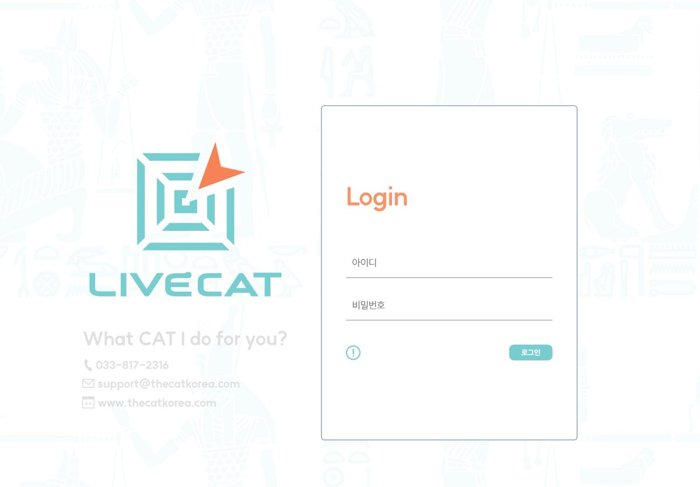

AI 학습 지원
HAI-Check
학생 수준에 맞춰 문항을 조절하는 AI 적응형 진단평가.
도입·구독 안내HAI Ecosystems 서비스의 데모 신청과 도입·구독은 KELI Marketplace에서 회원가입 후 이용할 수 있습니다.Marketplace 회원가입Marketplace 바로가기

문해력·영어·SW 기초학력 문항을 구축하고, CAT 방식으로 난이도를 실시간 조절해 학생 수준을 진단하며 결과 조회·관리를 지원합니다.
- 제공
- 한림대학교 (HAI Ecosystems)
- 운영 상태
- 운영 중
- 대상
- 학생 · 교수
- 이용 방식
- 시범 도입(무상 또는 협의) → 정식 도입(유상·기관별 협의)
- 매뉴얼
- PDF 열기
- 등록 정보
- 한림 AI 교육 포털에 등록된 정보를 자동으로 가져옵니다 (2026. 11. 3. 기준).
핵심 기능.
학생은 수준에 맞는 문항으로 진단받고 대학은 결과를 조회해 지원 계획에 활용합니다.
기초학력 문항 구축
실시간 적응형 CAT
수준 판별 규준
수업의 어느 단계에서 쓰나요.
설계부터 분석·개선까지 수업 6단계 중 이 서비스가 맡는 단계입니다.
01설계
02콘텐츠 생성
03수업·상호작용
04실습·학습
05평가
06분석·개선
색이 칠해진 단계가 이 서비스가 맡는 단계입니다.
HAI 활용 매뉴얼에 아직 배치되지 않은 서비스라 사무국 배치(확정 전)입니다.
AI 융합교육과정 보기
바로 체험 · 따라 해 보기
따라 해 보기

화면 출처: 서비스 매뉴얼 · ←/→ 키로도 넘길 수 있어요